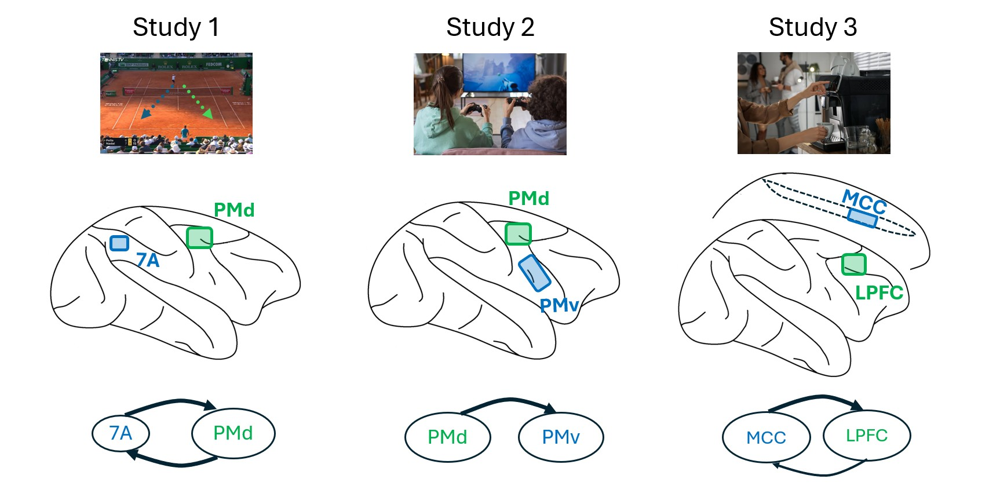

Dynamic Cortical Interactions Underlying Cognitive Motor Behaviors
I analyzed large-scale neural and behavioral recordings to characterize neural interactions between frontal, motor, and parietal areas during anticipation, decision making and learning.
- How does the brain anticipate upcoming movements?
See code on GitHub ↗ | See preprint on bioRxiv ↗ - How do agents coordinate their actions when outcomes depend on another agent?
- How does the brain represent information acquired through experience? See code on GitHub ↗

Time series analysis
Classification/Clustering
Reinforcement Learning models
Dynamical systems
Information theory
Statistical modeling